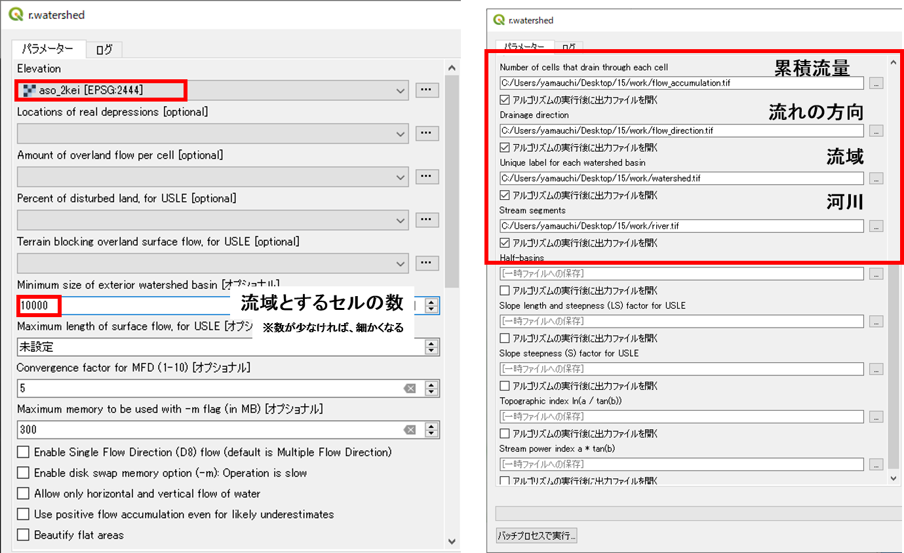
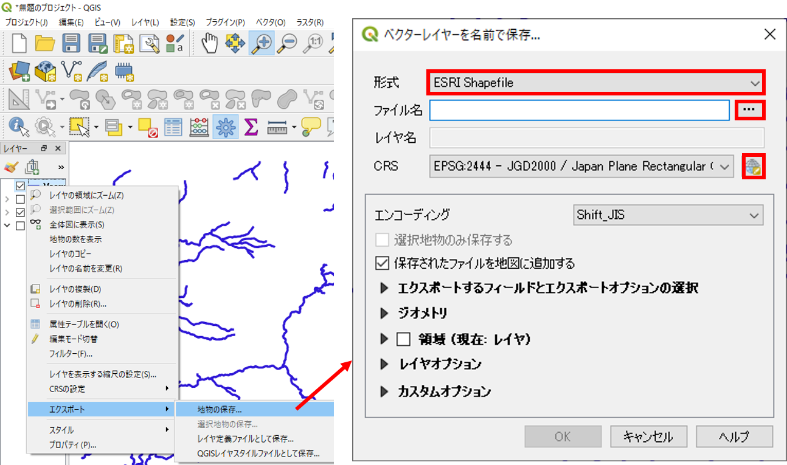
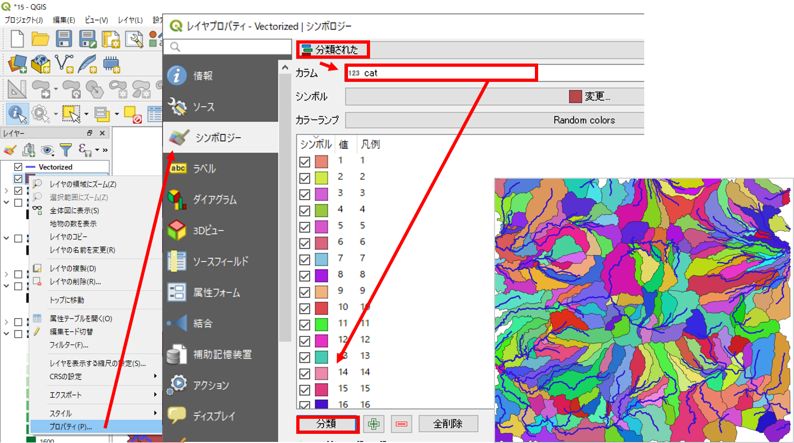

ラスタデータの分析（流域解析）
本教材は、「ラスタデータの分析（流域解析）」の実習用教材です。本教材の内容と対応する講義用教材の地理情報科学教育用スライド（GIScスライド）の4章を一読すると理解が深まります。
Menu
以下に関心がある方は、GIS実習オープン教材を参照してください。
実習用データ
実習をはじめる前に、asoをダウンロードしてください。
流域解析
GISでは、DEMデータを利用して、河川やその流域を求めることができます。以下では、GRASS GISの機能を利用して、流域を抽出する手法を解説します。GRASS GISの機能を利用する際に、アルゴリズム実行中にエラーとなる場合があるため、QGISを一度閉じ、QGIS Desktop 3.4.x with GRASS GIS 7.x.xを起動してください。
プロセッシング＞ツールボックスからr.watershedを選択する。

Elevationに標高ラスタを指定し、流域とするセル数を10000とし、累積流量、流れの方向、河川、流域を抽出する。

各項目ごとに下のような図ができる。

以下から、流域と河川のラスタをベクトルに変換していく。河川は、ラインに出力できるように河川のラスタを単純化する。プロセッシング＞ツールボックスをクリックする。次にr.thinを検索しr.thinを選択する。河川のラスターを設定し実行をクリックする。

ラスタをベクトル（ライン）に変換しプロセッシング＞ツールボックスをクリックする。次にr.to.vectを選択する。Thinnedのラスタを指定し、feture typeでlineを選択する。出力のファイル名を一時ファイルへの保存として実行する。

プロパティ＞シンボロジーを選択し、データのスタイルを調節する。

出力したデータを保存するため、河川のプロパティ＞エクスポート＞地物の保存を選択し、形式をESRI Shapefile、出力場所とファイル名、CRSを指定し、OKをクリックする。

同様の手法で、流域ラスタを指定し、Feature type をareaとし、流域のポリゴンを出力する。

プロパティ＞シンボロジー＞分類されたからカラムをcatとし、分類をクリックする。データを保存するには、河川レイヤと同様にプロパティ＞エクスポート＞地物の保存を実行する。

この教材の[課題ページ_流域解析]へ進む
ライセンスに関する注意事項
本教材で利用しているキャプチャ画像の出典やクレジットについては、その他のライセンスについてよりご確認ください。